Hiểu khả năng, giới hạn và vai trò phù hợp của AI trước khi ứng dụng.
VỀ VSC ACADEMY
AI KHÔNG CHỈ ĐỂ BIẾT
AI CẦN ĐƯỢC ỨNG DỤNG
VSC Academy là học viện AI ứng dụng, tập trung giúp người học xây dựng năng lực sử dụng AI trong công việc, học tập và những bài toán thực tế.
Thành viên hệ sinh thái VSC Group
HIỂU ĐÚNG·ỨNG DỤNG THẬT·PHÁT TRIỂN BỀN VỮNG
AI tạo giá trị khi trở thành một phần trong năng lực của con người.
- 01CON NGƯỜI
- 02HIỂU AI
- 03ỨNG DỤNG
- 04NĂNG LỰC
VÌ SAO CHÚNG TÔI BẮT ĐẦU
TỪ BIẾT AI
ĐẾN THỰC SỰ LÀM VIỆC CÙNG AI
AI đang phát triển rất nhanh. Nhưng biết nhiều công cụ không đồng nghĩa với việc chúng ta biết cách làm việc hiệu quả cùng AI.
VSC Academy được xây dựng để thu hẹp khoảng cách đó — giúp người học đi từ hiểu đúng, ứng dụng đúng đến từng bước xây dựng quy trình và hệ thống AI phù hợp với công việc của chính mình.
Chúng tôi không muốn người học chỉ biết thêm một công cụ.Chúng tôi muốn họ phát triển thêm một năng lực.
TRIẾT LÝ ĐÀO TẠO
HỌC QUA THỰC HÀNH
PHÁT TRIỂN QUA ỨNG DỤNG
VSC Academy tin rằng AI chỉ thực sự có giá trị khi người học có thể hiểu, thử nghiệm và đưa nó vào những bài toán của chính mình.
Thực hành trên tình huống, nhu cầu và công việc thực tế thay vì chỉ học qua lý thuyết.
Tạo ra quy trình, sản phẩm hoặc hệ thống có thể tiếp tục sử dụng và phát triển sau chương trình học.
MỖI CHƯƠNG TRÌNH PHẢI KẾT THÚC BẰNG MỘT NĂNG LỰC
MÀ NGƯỜI HỌC CÓ THỂ TIẾP TỤC SỬ DỤNG
ĐỊNH HƯỚNG PHÁT TRIỂN
XÂY NĂNG LỰC AI
CHO MỘT THẾ GIỚI ĐANG THAY ĐỔI
TẦM NHÌN
Trở thành một hệ sinh thái học tập AI ứng dụng uy tín, nơi cá nhân và tổ chức có thể liên tục học hỏi, thử nghiệm và phát triển năng lực làm việc cùng AI.
SỨ MỆNH
Giúp AI trở thành một năng lực thực tế mà con người có thể học, thực hành và ứng dụng trong công việc, học tập và đời sống.
GIÁ TRỊ CỐT LÕI CỦA VSC
NHỮNG GIÁ TRỊ
CHÚNG TÔI THEO ĐUỔI
VSC Academy kế thừa những giá trị cốt lõi của VSC Group và đưa chúng vào cách chúng tôi đào tạo, ứng dụng và phát triển AI.
TỬ TẾ
Đặt giá trị thật của người học và cộng đồng làm nền tảng cho mọi hoạt động.
CHÍNH TRỰC
Minh bạch về khả năng và giới hạn của AI, đồng thời đề cao tư duy kiểm chứng.
TRÁCH NHIỆM
Khuyến khích ứng dụng AI đi cùng ý thức, đạo đức và trách nhiệm đối với con người.
BỀN VỮNG
Xây dựng năng lực dài hạn thay vì chạy theo công cụ hay xu hướng công nghệ ngắn hạn.
ĐỘI NGŨ DẪN DẮT
ĐƯỢC XÂY DỰNG BỞI NHỮNG NGƯỜI
TIN VÀO GIÁ TRỊ CỦA AI ỨNG DỤNG
VSC Academy từng bước xây dựng đội ngũ giảng viên và chuyên gia có kinh nghiệm trong nghiên cứu, đào tạo và ứng dụng AI vào những bối cảnh thực tế.

GIẢNG VIÊN DẪN DẮT
ThS. NCS. TRẦN ANH VŨ
Nhà sáng lập VSC Academy · Giảng viên dẫn dắt
Chủ tịch HĐQT / Tổng Giám đốc VSC GROUPThS. NCS. Trần Anh Vũ tập trung nghiên cứu, đào tạo và ứng dụng AI vào công việc, giáo dục và vận hành thực tế, với định hướng giúp người học xây dựng năng lực làm việc cùng AI một cách có hệ thống.
Với vai trò Nhà sáng lập VSC Academy và Chủ tịch HĐQT / Tổng Giám đốc VSC GROUP, anh theo đuổi việc kết nối giữa đào tạo, ứng dụng công nghệ và phát triển năng lực con người, để AI không chỉ là một công cụ hỗ trợ mà trở thành một phần của năng lực làm việc hiện đại.
ĐỊNH HƯỚNG ĐÀO TẠO“AI không nên chỉ được học như một tập hợp công cụ. Giá trị thực sự của AI nằm ở cách con người ứng dụng và tích hợp nó vào công việc một cách có hệ thống.”
LĨNH VỰC TẬP TRUNG
Khám phá đội ngũ VSC Academy →THUỘC HỆ SINH THÁI VSC
VSC ACADEMY
ĐƯỢC KIẾN TẠO TRONG
HỆ SINH THÁI VSC
VSC Academy phát triển trong hệ sinh thái công nghệ VSC, kết nối đào tạo với nghiên cứu, ứng dụng AI và các giải pháp phục vụ cá nhân, tổ chức và doanh nghiệp.
Một hệ sinh thái nơi đào tạo, công nghệ và ứng dụng cùng vận hành để tạo ra năng lực thực tế.
HỆ SINH THÁI
-

-

-

-

-

-

BẮT ĐẦU CÙNG VSC ACADEMY
TÌM MỘT CÁCH HỌC AI
PHÙ HỢP VỚI BẠN
Khám phá các chương trình của VSC Academy và bắt đầu xây dựng năng lực AI cho công việc, học tập và những bài toán thực tế của bạn.
Dành cho người mới bắt đầu, người đi làm và những người muốn ứng dụng AI một cách thực tế.